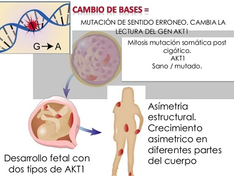
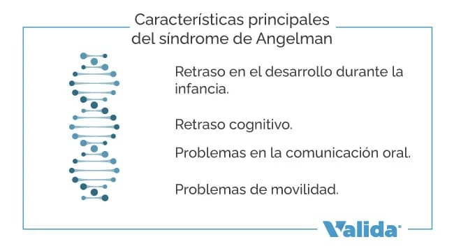

LA GENETICA
La genética es el estudio científico de los genes y la herencia (como ciertos rasgos o características se transmiten de padres a hijos como resultado de cambios en la secuencia del ADN). Un gen es un segmento de ADN que contiene instrucciones para producir una o más moléculas que ayudan al funcionamiento del cuerpo.
La genética humana abarca una variedad de campos incluidos: la genética clásica, citogenetica, genética molecular, biología molecular, genomica, genética de poblaciones, genérica del desarrollo, genética médica y el asesoramiento genético.
El ADN de todos los organismos consta de las mismas unidades químicas (bases) denominadas adenina, timina, guanina y citosina, abreviadas como A, T, G y C. En cadenas de ADN complementarias, A se empareja con T y C con G para formar pares de bases.
Un rasgo relacionado con la genética es un rasgo individual. Los rasgos pueden estar determinados por genes, factores ambientales o una combinación de estos. Las características pueden ser cualitativas (por ejemplo color de ojos) o cuantitativas (por ejemplo altura o presión arterial).
EL SÍNDROME DE PROTEUS
El síndrome de Proteus se caracteriza por un crecimiento excesivo de una parte del cuerpo. El crecimiento es asimétrico, lo que significa que afecta de manera diferente los lados derecho e izquierdo del cuerpo. Los recién nacidos con síndrome de Proteus pueden tener pocos o ningún síntoma. El crecimiento excesivo comienza a aparecer entre los 6 y los 18 meses y se vuelve más pronunciado con la edad. Esto puede causar diferencias en la apariencia y un mayor riesgo de coágulos de sangre y tumores con el tiempo. Algunas personas con el síndrome tienen anomalías neurológicas, como discapacidad intelectual, convulsiones y pérdida de la visión y de los rasgos faciales.
Es causado por un cambio en el gen AKT1. No se hereda, sino que ocurre como una mutación aleatoria en una célula del cuerpo de un bebé en desarrollo durante el embarazo. La mutación del gen AKT1 solo afecta a algunas células del cuerpo. Es por eso por lo que solo ciertas partes o áreas del cuerpo se ven afectadas y por qué las personas con síndrome de Proteus pueden ser muy diferentes entre sí. El manejo de la afección a menudo requiere un equipo de especialistas con experiencia en el síndrome y sus complicaciones.
Este síndrome es causado por cambios en el gen AKT1. Estos cambios no se heredan, sino que ocurren aleatoriamente en la célula embrionaria durante el desarrollo prenatal. A medida que las células crecen y se dividen, algunas desarrollan una mutación y otras no. Por lo tanto, en las personas con síndrome de Proteus, el gen AKT1 está alterado sólo en unas pocas células. Esta mezcla de células con y sin una mutación genética se llama mosaicismo. El gen AKT1 tiene instrucciones para producir una proteína que ayuda a regular el crecimiento, la división (proliferación) y la muerte celular. Cuando el gen AKT1 se altera, produce una proteína anormal. La mutación del gen AKT1 se llama "c. 49G>A, p.Glu17Lys" y es un tipo de mutación "activadora". Esto significa que hay un "error de escritura" en el gen AKT1, lo que da como resultado una proteína anormalmente activa. Se cree que esta proteína, cuando está hiperactiva, aumenta la velocidad a la que crecen las células y hace que las células continúen dividiéndose sin morir, como sucedería de forma natural. El aumento de la proliferación de células en algunos tejidos y órganos provoca los síntomas del síndrome, como el crecimiento anormal y el riesgo de formación de tumores.
El tratamiento del crecimiento excesivo incluye procedimientos ortopédicos para retrasar o detener el crecimiento óseo lineal y la corrección de deformidades esqueléticas como la escoliosis. Para corregir los trastornos del desarrollo se recomienda la intervención temprana en educación especial. Dado que cualquier órgano o tejido puede verse afectado, los pacientes deben ser monitoreados por posibles complicaciones. Los comportamientos recomendados incluyen el control y el tratamiento de problemas vasculares, como coágulos de sangre en una vena (embolia venosa) y el bloqueo de una arteria en el pulmón con un coágulo de sangre (embolia pulmonar), control y tratamiento de enfermedades pulmonares y control de rutina para problemas de la piel.

EL SÍNDROME DE ANGELMAN
El síndrome de Angelman es un trastorno genético. Provoca retrasos en el desarrollo, trastornos del habla y del equilibrio, discapacidad intelectual y en ocasiones, convulsiones. Las personas con síndrome de Angelman tienden a sonreír y reír con frecuencia y tienen personalidades alegres y entusiastas. Los retrasos en el desarrollo que comienzan entre los 6 y los 12 meses suelen ser los primeros signos del síndrome de Angelman. Las convulsiones pueden comenzar a los 2 o 3 años de edad. Las personas con síndrome de Angelman suelen tener una esperanza de vida casi normal, pero la afección no se puede curar. El tratamiento se enfoca de problemas médicos, del sueño y del desarrollo.
Los signos y síntomas del síndrome de Angelman incluyen:
- Retraso en el desarrollo, que incluye no gatear o gatear a los 6-12 meses de edad.
- Discapacidad intelectual.
- Dificultad para caminar, moverse o mantener el equilibrio.
- Sonreír y reír a menudo.
- Problemas con la succión o la alimentación.
- Dificultad para conciliar el sueño y permanecer dormido.
Las personas con síndrome de Angelman también pueden tener las siguientes características:
- Convulsiones que suelen comenzar entre los 2 y 3 años de edad. -Movimientos rígidos o espasmódicos.
- Una cabeza pequeña con una espalda plana. el motor del lenguaje Cabello, piel y ojos claros.
- Comportamiento inusual, como columpiarse y levantar los brazos al caminar.
